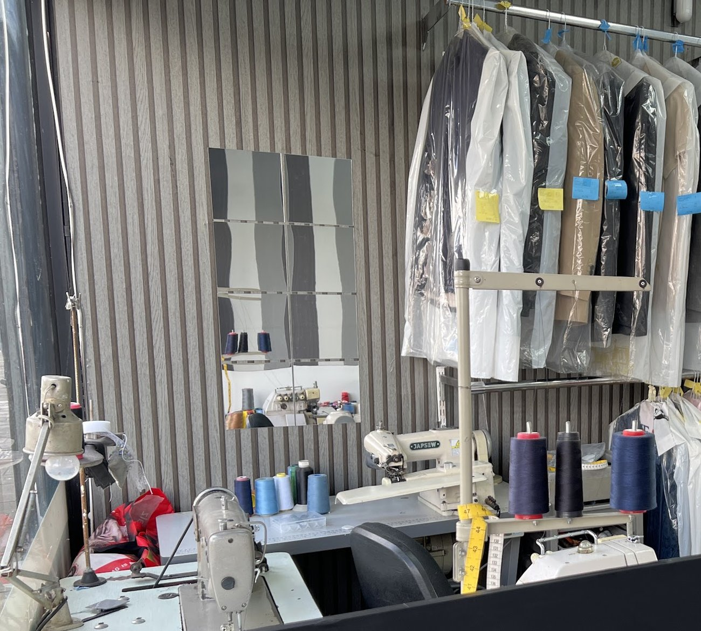

Dry cleaning
Suits, coats, jackets and dresses, cleaned on our own machine behind the counter.
Services
Cleaning, pressing and tailoring, all done on Marsh Road.

Suits, coats, jackets and dresses, cleaned on our own machine behind the counter.
Shirts washed, finished and bagged, ready to collect from the rail.
Pressing on its own, for the things that do not need cleaning — just finishing.
Taking up, letting out, zips, buttons and seams, on the machines at the back of the shop.
Gowns, embroidered pieces and the things you only wear once.
Curtains taken in and cleaned — the loads that will not fit at home.
Duvets, throws and bedding.
Everyday laundry alongside the dry cleaning.
Alterations & repairs
Two industrial machines, an overlocker, cones of thread and a tape measure, all a few feet from the counter. Bring the garment in and we can talk through what is possible before anything is agreed.
Ask in the shop what is possible on a given garment.

Our counter notice: no responsibility can be taken for belts, buckles, buttons and zips, or for pens left in pockets. Garments not collected within three months may be disposed of.
Check pockets, and collect in good time.
Not sure it can be saved?
A stain, a tear, a zip that has gone — worth one conversation first.